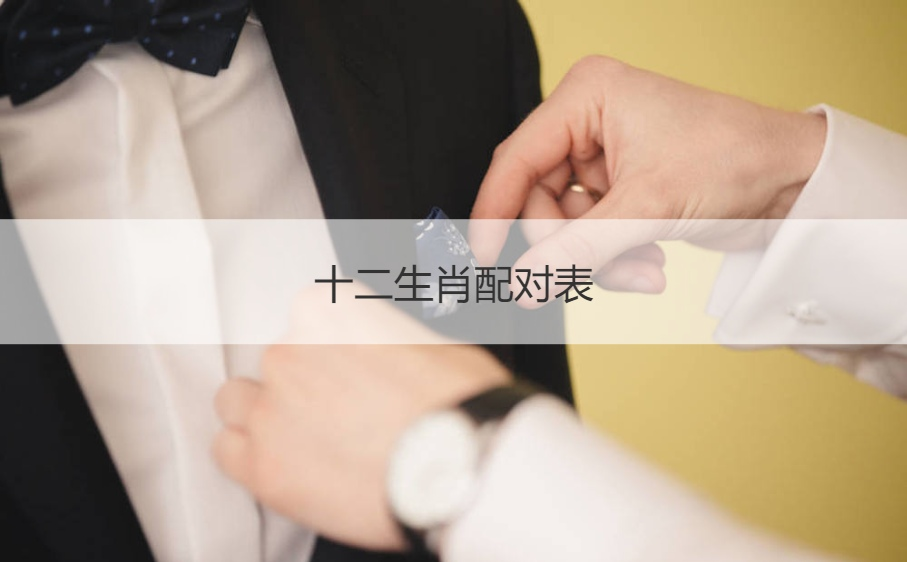

说到生肖属相，相信大家对于相关的介绍一定非常的熟悉，我们都知道在我们出生的那一刻就决定了我们的生辰以及自己的生肖属相了，而关于生肖属相以及生辰八字就涉及到了比较多的内容了，尤其是生肖属相所涉及到的一些命运相关类的介绍更会成为大家重点关注的内容，那么大家知道如今的十二生肖婚配表是怎样的吗？如今的婚配属相又是怎样介绍的呢？
一、十二生肖配对表
1、属鼠的属相婚配表
宜配：猴、鼠、牛、龙大吉，其它生肖次吉。
忌配：马、羊、兔、鸡。不成家业，祸不单行。
2、属牛的属相婚配表
宜配：蛇、鸡、鼠、牛大吉，其它生肖次吉。
忌配：马、羊、龙、狗。前半世吉，后半世凶。
3、属虎的属相婚配表
宜配：马、狗、虎大吉，猪吉凶各半，其它生肖次吉。
忌配：猴、蛇。夫妻相克，或不和，忧愁不绝。
4、属兔的属相婚配表
宜配：羊、狗、猪、兔大吉，其它生肖次吉。
忌配：鼠、鸡、牛、龙。事业不成，不得时运，吃尽痛苦。
5、属龙的属相婚配表
宜配：鼠、鸡、猴大吉，其它生肖次吉。
忌配：兔、狗、牛、龙。夫妻不能和睦相处，招灾惹祸。
6、属蛇的属相婚配表
宜配：牛、鸡大吉，其它生肖次吉。
忌配：猴、猪、虎。夫妻无蜜语，子女缘浅薄。
7、属马的属相婚配表
宜配：虎、羊、狗大吉，其它生肖次吉。
忌配：鼠、牛、兔、马。中年趁人快乐，一生困难辛苦。
8、属羊的属相婚配表
宜配：兔、马、猪大吉，其它生肖次吉。
忌配：鼠、牛、狗。 夫妻一世难得幸福，一生无衣禄。
9、属猴的属相婚配表
宜配：鼠、龙大吉，其它生肖次吉。
忌配：虎、蛇、猪。 灾难叠至，病疾困苦。
10、属鸡的属相婚配表
宜配：牛、龙、蛇大吉，其它生肖次吉。
忌配：鼠、兔、鸡、狗。 家属无禄，子息无多，每多灾害之困苦。
11、属狗的属相婚配表
宜配：虎、兔、马大吉，其它生肖次吉。
忌配：牛、龙、羊、鸡。意志交合，但灾害叠来，难得福运大亨，一生困苦。
12、属猪的属相婚配表
宜配：羊、兔、大吉，相虎吉凶相半，其它生肖次吉。
忌配：蛇、猴、猪。 虽然和合，或有单独之嫌克，家皆薄，一生难得大幸福。

二、婚配属相表大全
生肖配对——狗
配虎:杞人忧天的狗得到坚强的虎支持，虎也需要狗的忠。配兔:细心的兔会在暗中支持狗，而狗也会喜欢善良的兔。配猪:大家能互相了解对方的需要，彼此敬重。
忌配相龙、牛，其他生相次吉。十二生肖顺序
生肖配对——鸡
配牛:忠实的牛和保守的鸡相处良好，感情发展稳定。
配龙:热情的鸡从来不在意站在龙的后面，龙的成就便是鸡的骄傲。配蛇:一起讨论人生，追求理想及潮流，极为登对。
忌配相兔，其他生相次吉。
生肖配对——猴
配鼠:鼠懂得逗猴开心，大家一起时，生活充满欢笑。
配龙:精力充沛的龙为猴带来欢乐，使猴永不感厌倦，龙向来是情场上的常胜军只有猴懂打败龙，这便足以让猴著迷了。十二生肖本命佛
忌配相虎、猪，其他生相次吉。
生肖配对——羊
配兔:缺少独立性的羊可依赖有良好金钱观的兔，大家相亲相爱。配马:马极愿为羊解困，羊的艺术修养能满足马高贵的气质。配猪:大家个性温和，互相吸引，遇挫时，猪会为羊奋斗。忌配相牛、狗，其他生相次吉。
生肖配对——马
配虎:高贵大方的虎使马愿意为其付出，马也能得到虎真挚的感情。配羊:易被羊的温柔吸引，羊的依赖使马觉得幸福。
配狗:有才智的狗助马发展事业，马当然不会错过这么一位好伴侣。忌配相鼠、牛，其他生相次吉。
生肖配对——蛇
配牛:蛇会被牛坚定的眼神吸引，之间也小有争执。
配鸡:虽有争执，但却是愈吵愈浓，对蛇鸡而言，吵架也是一种沟通方式。忌配相猪、虎，其他生相次吉。
生肖配对——龙
配鼠:任性的龙会给鼠的赞美打动，龙也欣赏鼠的踏实及幽默。配猴:大家都具有创造力，一拍即合，但猴不宜向龙使小手段。配鸡:鸡会崇拜龙，在龙遇挫折时，鸡会忠实在旁鼓励。
忌配相狗，其他生相次吉。
生肖配对——兔
配羊:羊有依赖心。兔喜欢照顾所爱的人，相处惬意。
配狗:大家都希望在安详的环境中生活，两者为将来一起努力。配猪:性格相近，喜欢宁静，彼此吸引，发展感情。
忌配相鸡、鼠，其他生相次吉。
生肖配对——虎
配马:马易吸引虎的注意在互相尊重、支持的情况下非常幸福。
配狗:自负的虎只有在忠贞的狗面前才会表现出温柔的一面，虎又会鼓励狗追求人生目标，彼此体贴，共甘苦。
忌配相猴、蛇，其他生相次吉。
生肖配对——牛
配鼠:热情的鼠为沉默的牛带来欢乐，对牛忠心，相处和睦。配蛇:只要蛇忠诚待牛，蛇便能依据才能发挥自己的事业。配鸡:富有领导欲的牛可使保守的鸡服从，各取所需。忌配相羊、马、狗，其他生相次吉。十二生肖配对
生肖配对——鼠
配龙:充满朝气的龙使鼠快乐，鼠的赞美能打动龙的心。配猴:鼠欣赏机伶的猴，如猴诚心对鼠，会相处愉快。
配牛:温和的牛使鼠发挥可爱、乐观的一面，安慰鼠激动的心。忌配相马、兔、羊，其他生相次吉。
三、十二生肖男女最佳配对
1、生肖鼠：宜配属相龙、猴、牛，忌配属相马、兔、羊。
2、生肖牛：宜配属相鼠、蛇、鸡，忌配属相马、羊、狗。
3、生肖虎：宜配属相马、狗、猪，忌配属相蛇、猴、羊。
4、生肖兔：宜配属相羊、狗、猪，忌配属相龙、鼠、鸡。
5、生肖龙：宜配属相鼠、猴、鸡，忌配属相狗、兔、牛。
6、生肖蛇：宜配属相牛、鸡、龙，忌配属相猪、虎、狗。
7、生肖马：宜配属相虎、羊、狗，忌配属相鼠、牛、鸡。
8、生肖羊：宜配属相兔、马、猪，忌配属相狗、牛、鼠。
9、生肖猴：宜配属相龙、蛇、鼠，忌配属相猪、虎、鸡。
10、生肖鸡：宜配属相蛇、龙、牛，忌配属相狗、羊、鼠。
11、生肖狗：宜配属相马、兔、虎，忌配属相牛、鸡、龙。
12、生肖猪：宜配属相羊、兔、虎，忌配属相蛇、猴、猪。